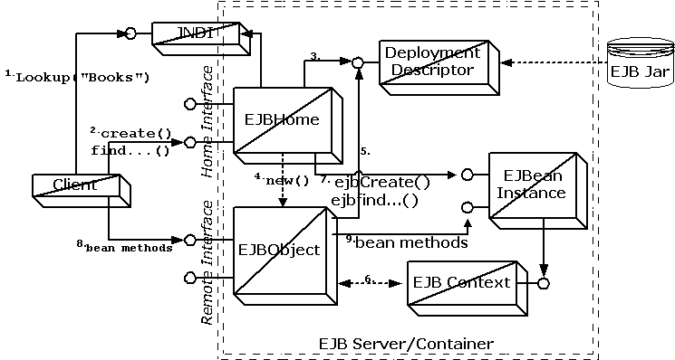
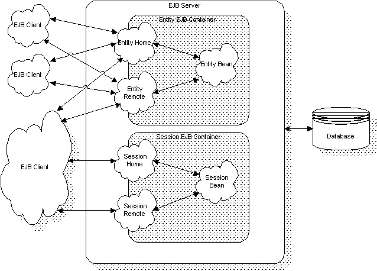

EJB
Components
Gopalan Suresh Raj
Let us take a more in-depth look at some of the major components of the EJB architecture shown in Figure below and understand their runtime behavior.
 Figure: Major components of the EJB Architecture |
The Home interface and the Home object
When an EJB client needs to use the services of an enterprise Bean, it creates the EJB through its Home interface. The client specifically uses one of the multiple create() methods that the Home interface defines. The implementation of the Home interface is done through an object called the Home object. An instance of this Home object is created within the server and is made available to the clients as a factory for creating the enterprise Bean.
Finding the Home Object
The EJB client locates the Home object through JNDI since a reference to the home object is placed in the naming service. The location of the namespace and the JNDI context factory class name are provided to the client initially. In addition to providing the location and class name, the client should also have some knowledge of how to locate the Home object within the naming tree.
When an EJB deployer deploys an EJB onto an EJB server, she specifies a particular location in the naming tree such as "com/gopalan/Account". Then, the EJB client must be given this fully qualified pathname to locate and obtain a reference to the "Account" Home object.
| // get the JNDI
naming context Context initialCtx = new InitialContext (); // use the context to lookup the EJB Home interface AccountHome home =(AccountHome)initialCtx.lookup ("com/gopalan/Account"); // use the Home Interface to create a Session Bean object Account account = home.create (1234, "Athul", 1000671.54d); |
Definition of the Home Interface
The EJBHome
object is an implementation of the javax.ejb.EJBHome interface. It has the needed create()
and find() methods, and each of these is matched
with an ejbCreate() or ejbFind() method
of the same signature in the actual Enterprise Bean
implementation that is being created. There are also ejbRemove()
methods that use the Handle of the EJBean or its Primary
Key. There is also a method to obtain the EJBMetaData
of the EJBean. This interface is defined in the
specification as follows:
| public interface
javax.ejb.EJBHome extends Remote { public abstract void
remove (Handle handle) |
The EJB developer has to define ejbCreate() methods in his enterprise beans. He is also
required to define corresponding create() methods
which match the signatures in the EJB’s home interface. If
the developer is coding an Entity Bean, she may have to define
finder methods in the home interface which will allow clients to
locate existing entity beans based on their identity.
A typical Home interface definition for an EJB may look something like this:
| import
javax.ejb.*; import java.rmi.*; public interface AccountHome
extends EJBHome { |
The Remote Interface
The EJB developer must create a remote interface, which describes the business methods of the Bean that the EJB client would be able to invoke. The EJBObject will have the implementation code generated by the container tools for this interface.
The method names and the signatures listed in the remote interface must exactly match the method names and signatures of the business methods defined by the enterprise Bean. This differs from the Home interface, whose method signatures matched, but the names were different.
A typical remote interface definition for an EJB may look like this.
| import
javax.ejb.*; import java.rmi.*; public interface Account
extends EJBObject { |
The EJBObject
The EJBObject is a network-visible object with a stub and skeleton that acts as a proxy for the enterprise Bean. The Bean’s remote interface extends the EJBObject interface, making the EJBObject class specific to the Bean class. For each enterprise Bean, there will be a custom EJBObject class.
Types of EJBs: Entity and Session Beans
Enterprise Beans are building blocks that can be used alone or with other enterprise beans to build complete, robust, thin-client multi-tiered applications. An EJB is a body of code with fields and methods to implement modules of business logic. They can either be transient or persistent. There can be two types of enterprise Beans:
Figure below illustrates a high-level view of an EJB environment with session and entity enterprise beans.
 Figure: A typical EJB environment with entity and session beans |
Before we begin our discussion of entity and Session Beans, it is important to understand the concept of Passivation and Activation. Passivation is the process by which the state of a Bean is saved to persistent storage and then is swapped out. Activation is the process by which the state of a Bean is restored by swapping it in from persistent storage.
click here to go to
My EJB HomePage...
| About the Author... |
| Gopalan Suresh Raj is a Software Architect, Developer and an active Author. He is contributing author to a couple of books "Enterprise Java Computing-Applications and Architecture" and "The Awesome Power of JavaBeans". His expertise spans enterprise component architectures and distributed object computing. Visit him at his Web Cornucopia© site (http://www.execpc.com/~gopalan) or mail him at gopalan@execpc.com. |
|
This site was developed and is maintained by Gopalan Suresh Raj This page has been visited |
|
Last Updated : Dec 19, '98 |
||
Copyright (c) 1997-98, Gopalan Suresh Raj - All rights reserved. Terms of use. |
All products and companies mentioned at this site are trademarks of their respective owners. |